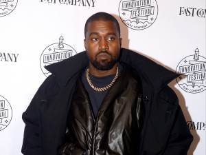

| Grammy | Grammy |
|---|---|
| Mejor album de rap | Mejor rapero |
| 2017 | 2017 |
My Beautiful Dark Twisted Fantasy

My Beautiful Dark Twisted Fantasy (MBDTF) es un álbum de
Kanye West de 2010 que ha sido considerado uno de los mejores
álbumes de la historia. El álbum es un viaje de auto-aceptación y
un manifiesto de los puntos de vista del rapero sobre la sociedad en
ese momento. El álbum incluye temas sociales y personales que se reflejan
en las canciones y en elementos como la portada.
Una joya ecléctica en la que vemos influencias del rap
más clásico pero tambien del rock, pop, funk, gospel y la
música electrónica y en la que colaboraron como productores
invitados RZA (Wu-Tang Clan), Jeff Bhasker, No ID y Mike Dean, ahí es nada.
Yee
Ye tiene instrumentales muy salvajes y aritmicas, uno de los albumes más
amados u odiados de kanye
Mejores temas de Yeezus:
- New slaves
- On sight
- I'm in it